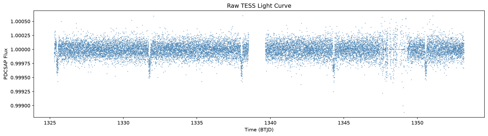
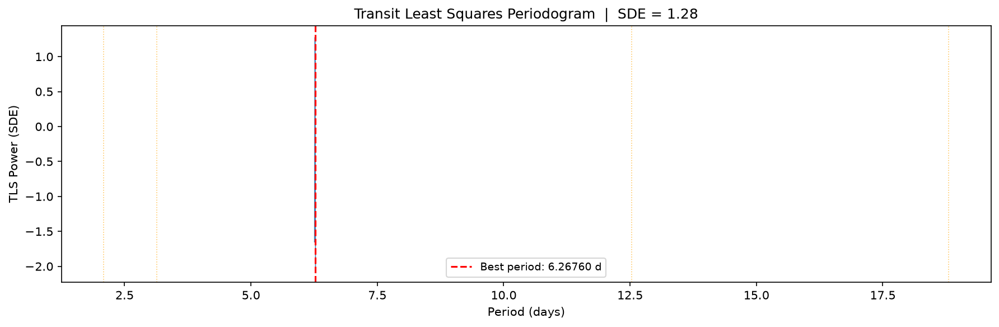
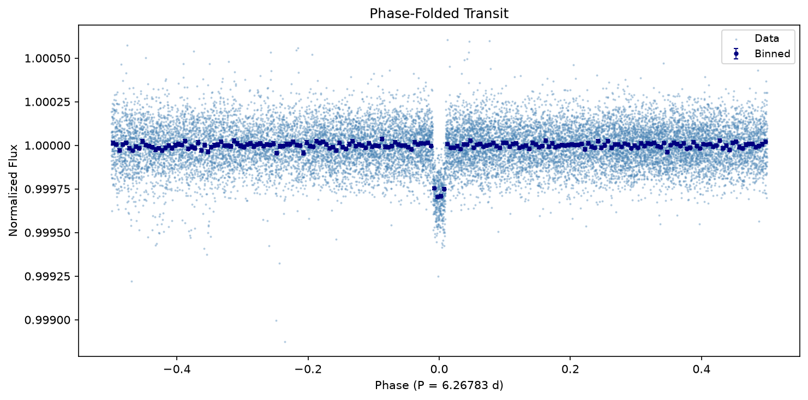

Planet Parameters
Period (P)
6.267832 d
Adopted from Lit
Transit Epoch (t₀)
1349.4128 BTJD
Derived (MCMC)
Radius Ratio (Rₚ/Rₛ)
0.00010
Derived (MCMC)
Planet Radius (Rₚ)
0.01 R⊕
Derived (MCMC)
Transit Duration (T₁₄)
2.877 hr
Derived (TLS)
Impact Parameter (b)
N/A
Derived (MCMC)
Semi-major Axis (a)
N/A
Derived (MCMC)
Equilibrium Temp (Teq)
N/A
Derived (MCMC)
Stellar Parameters
Stellar Radius (Rₛ)
1.15 R⊂
Gaia DR3 (Lit)
Stellar Mass (Mₛ)
1.03 M⊂
Gaia DR3 (Lit)
Effective Temp (Teff)
5855.5 K
Gaia DR3 (Lit)
Surface Gravity (log g)
4.22
Gaia DR3 (Lit)
Metallicity ([Fe/H])
-0.23
Gaia DR3 (Lit)
Stellar Density (ρₛ)
0.959 g/cm³
Gaia DR3 (Lit)
MCMC Diagnostics
R-hat Convergence
N/A
Derived (MCMC)
Min Effective Sample Size
N/A
Derived (MCMC)
Divergent Transitions
N/A
Derived (MCMC)
TLS SDE / SNR
1.28 / 45.84
Derived (TLS)

Raw TESS SAP/PDCSAP Light Curve before flat-fielding and outlier rejection.

Flattened Light Curve: detrended using a spline or high-pass filter, ready for transit search.

TLS / BLS Periodogram: power vs trial period (days). The peak indicates the best-fit orbital period.

Phase-Folded Light Curve: data folded at the detected period, showing the characteristic transit dip.

Bayesian Transit Fit: Best-fit Keplerian transit model with GP systematics overlaid on the raw data (top) and residuals (bottom).

Posterior Predictive Check: Draws from the posterior overlaid on the transit data.

Residuals vs Time (top) and vs Phase (bottom) showing the goodness of the fit.

Corner Plot showing covariance and 1D/2D posterior probability distributions for the key transit parameters.

MCMC Trace Plots: Parameter values over chain steps to verify proper mixing and convergence.
{
"target": {
"tic_id": 261136679,
"name": "TIC 261136679",
"ra": 84.29928,
"dec": -80.464604
},
"period": {
"value": 6.267832,
"source": "archive",
"reference": "Local NASA Exoplanet Archive TOI export: /home/astro-nitesh/Desktop/Siya/exoplanet_modelling/tess_exoplanet_pipeline/data/TOI_2026.06.28_09.42.00.csv",
"epoch": 2460011.550653
},
"detection": {
"period": 6.267597934028787,
"epoch": 1325.5041538151936,
"duration_hr": 2.876555121194894,
"depth": 0.9996708419578844,
"method": "tls",
"sde": 1.276821157493743,
"snr": 45.83987141956067,
"note": "diagnostic only; archive period used"
},
"stellar": {
"r_star": 1.15,
"r_star_err": 0.05,
"m_star": 1.0348225993061717,
"m_star_err": 0.10348225993061717,
"teff": 5855.533203125,
"teff_err": 5857.32373046875,
"logg": 4.223499774932861,
"logg_err": null,
"feh": -0.2298000007867813,
"feh_err": null,
"lum": null,
"lum_err": null,
"age": null,
"age_err": null,
"method": "gaia_only",
"rho_star": 0.9592729799660152,
"rho_star_err": 0.15766325562281935
},
"planet": {
"t0": 1349.4127638036655,
"rp_r_star": 0.0001,
"a_r_star": 200.0,
"rp_earth": 0.012557761732851983,
"u1": 0.0,
"method": "batman_map"
},
"diagnostics": {},
"metadata": {
"tess_pipeline_version": "0.1.0",
"run_start": "2026-06-29T19:46:52.126733",
"config": "{'target': 'TIC 261136679', 'author': 'SPOC', 'cadence': 120, 'sectors': 1, 'lightcurve_source': 'download', 'lightcurve_fits': [], 'search_method': 'tls', 'inference': True, 'inference_backend': 'batman_only', 'chains': 1, 'draws': 2, 'gp_kernel': 'SHO', 'verbose': True}"
}
}